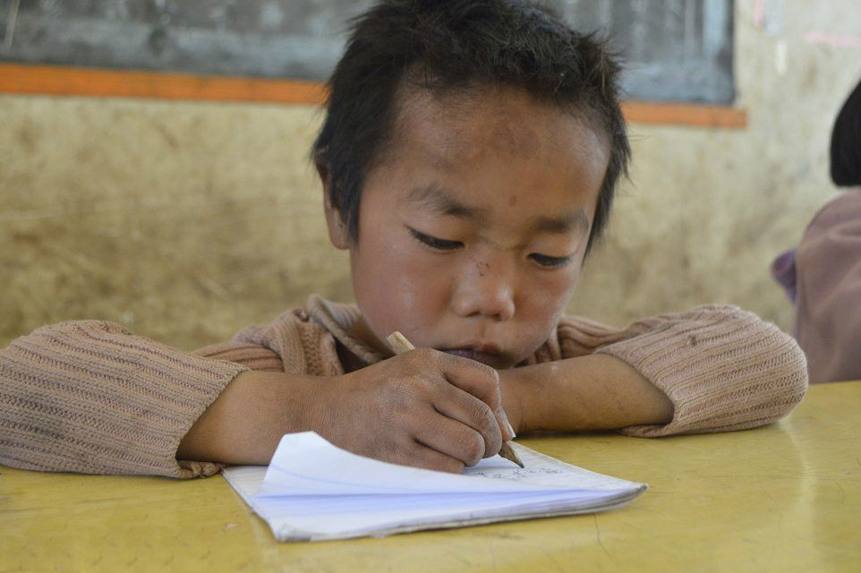
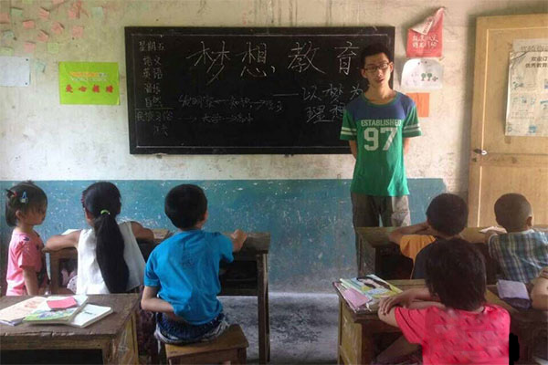

湖南大学彩虹助学协会分赴12地开展暑期支教
长沙7月24日讯（实习生 郝婧云 卢科卓 记者 吴庠）
7月中旬，湖南大学彩虹助学协会143名志愿者陆续出发，分赴怀化、郴州、麻阳、凤凰、益阳等市州12个支教点，开始为期15天的暑期支教之旅，为贫困山区的留守儿童带去知识和关爱。

据湖南大学相关负责人介绍，本次支教活动，先后收到250多名志愿者的报名。经过层层筛选，彩虹助学协会最终确定了143名人选。在正式支教前，志愿者接受了教案、医疗和体能等多项技能培训。
143名志愿者分成12个支教小组分赴教学点。支教期间，志愿者采取日常教学与家访结合的形式，在课堂上寓教于乐，课后去到孩子家里了解家庭状况，以便完善社团自主建立的贫困儿童资料库，进行后期资助。
“这些孩子需要的不仅仅是丰富的知识，他们更需要我们的陪伴和关爱。”麻阳县石羊哨支教队队长刘泽称，12个支教点大多是在山 区，迫于生计，孩子们的父母都外出打工，而孩子留在家里跟着爷爷奶奶或外公外婆生活，很多孩子长时间见不到父母，非常需要陪伴和关爱。
而湖南大学彩虹助学协会现任会长郑凯旋表示，“志愿者很珍惜这次支教活动，支教活动完成之后，我们还会继续将爱心传递下去，有机会的话可以带孩子们参观参观湖大，激励他们好好学习，走出大山。希望更多的人能关注贫困山区留守儿童的教育问题，帮助他们健康成长。”

湖南大学彩虹助学协会是一个致力于帮助弱势群体的公益社团，对贫困儿童的教育问题尤为关注。2007年至今，社团在每年暑假都 会开展“山那边”——暑期支教活动，至今已延续了9年。